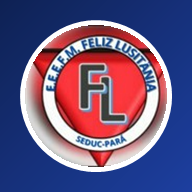

Escola Estadual “Feliz Lusitânia”
SEDUC · Pará · Química
Prova digital
Ligações Químicas
Cada questão trabalha um tipo de interação diferente. Leia com calma: depois que confirmar, não será possível mudar a resposta.
Professor
Amauri Silva Junior
Diretora
Carla Nilce
Este computador tem a prova de em andamento.
Prof. Amauri Silva Junior
amauri.junior@escola.seduc.pa.gov.br
amauri.junior@escola.seduc.pa.gov.br